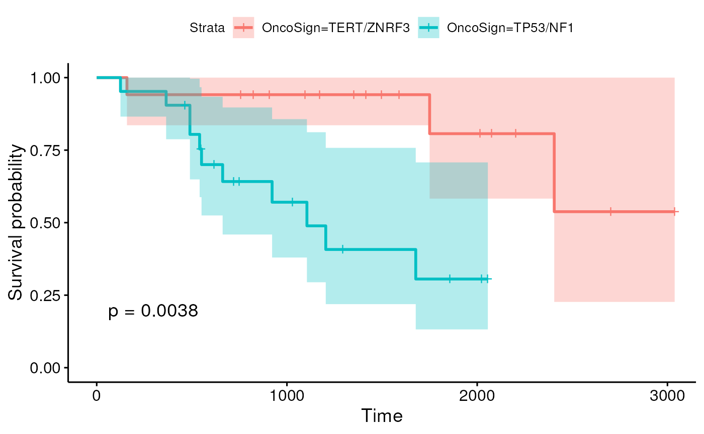

The MultiAssayExperiment class

In modern “multi-omic” experiments, several different omic data are collected on the same samples, e.g., RNA-seq, mutations, copy-number variation, etc.
In these cases, it is useful to organize the data in a single object that has the ability of linking together samples from the same individuals and data types of different nature.
The Bioconductor class for this task is the
MultiAssayExperiment. Conceptually, it can be thought of as
a list of objects, one per data modality, e.g., a SummarizedExperiment
for the transcritpomic profiles, but it contains several features that
make working with multi-omic data simpler.
In order to see it in action, we look at an example from The Cancer Genome Atlas (TCGA).
Curated TCGA data
Bioconductor includes the curatedTCGAData package, which
contains a curated version of the multi-omic TCGA dataset. These data
consist of thousands of samples across different cancer types.
data(diseaseCodes)
diseaseCodes## Study.Abbreviation Available SubtypeData
## 1 ACC Yes Yes
## 2 BLCA Yes Yes
## 3 BRCA Yes Yes
## 4 CESC Yes No
## 5 CHOL Yes No
## 6 CNTL No No
## 7 COAD Yes Yes
## 8 DLBC Yes No
## 9 ESCA Yes No
## 10 FPPP No No
## 11 GBM Yes Yes
## 12 HNSC Yes Yes
## 13 KICH Yes Yes
## 14 KIRC Yes Yes
## 15 KIRP Yes Yes
## 16 LAML Yes Yes
## 17 LCML No No
## 18 LGG Yes Yes
## 19 LIHC Yes No
## 20 LUAD Yes Yes
## 21 LUSC Yes Yes
## 22 MESO Yes No
## 23 MISC No No
## 24 OV Yes Yes
## 25 PAAD Yes No
## 26 PCPG Yes No
## 27 PRAD Yes Yes
## 28 READ Yes No
## 29 SARC Yes No
## 30 SKCM Yes Yes
## 31 STAD Yes Yes
## 32 TGCT Yes No
## 33 THCA Yes Yes
## 34 THYM Yes No
## 35 UCEC Yes Yes
## 36 UCS Yes No
## 37 UVM Yes No
## Study.Name
## 1 Adrenocortical carcinoma
## 2 Bladder Urothelial Carcinoma
## 3 Breast invasive carcinoma
## 4 Cervical squamous cell carcinoma and endocervical adenocarcinoma
## 5 Cholangiocarcinoma
## 6 Controls
## 7 Colon adenocarcinoma
## 8 Lymphoid Neoplasm Diffuse Large B-cell Lymphoma
## 9 Esophageal carcinoma
## 10 FFPE Pilot Phase II
## 11 Glioblastoma multiforme
## 12 Head and Neck squamous cell carcinoma
## 13 Kidney Chromophobe
## 14 Kidney renal clear cell carcinoma
## 15 Kidney renal papillary cell carcinoma
## 16 Acute Myeloid Leukemia
## 17 Chronic Myelogenous Leukemia
## 18 Brain Lower Grade Glioma
## 19 Liver hepatocellular carcinoma
## 20 Lung adenocarcinoma
## 21 Lung squamous cell carcinoma
## 22 Mesothelioma
## 23 Miscellaneous
## 24 Ovarian serous cystadenocarcinoma
## 25 Pancreatic adenocarcinoma
## 26 Pheochromocytoma and Paraganglioma
## 27 Prostate adenocarcinoma
## 28 Rectum adenocarcinoma
## 29 Sarcoma
## 30 Skin Cutaneous Melanoma
## 31 Stomach adenocarcinoma
## 32 Testicular Germ Cell Tumors
## 33 Thyroid carcinoma
## 34 Thymoma
## 35 Uterine Corpus Endometrial Carcinoma
## 36 Uterine Carcinosarcoma
## 37 Uveal MelanomaLet’s focus on the Adrenocortical carcinoma (ACC) and let’s see what type of data are available for this cohort.
Adrenocortical carcinoma is a rare disease in which malignant (cancer) cells form in the outer layer of the adrenal gland.

curatedTCGAData("ACC", version = "2.0.1", dry.run = TRUE)## See '?curatedTCGAData' for 'diseaseCode' and 'assays' inputs## ah_id title file_size
## 1 EH4737 ACC_CNASNP-20160128 0.8 Mb
## 2 EH4738 ACC_CNVSNP-20160128 0.2 Mb
## 3 EH4740 ACC_GISTIC_AllByGene-20160128 0.2 Mb
## 4 EH4741 ACC_GISTIC_Peaks-20160128 0 Mb
## 5 EH4742 ACC_GISTIC_ThresholdedByGene-20160128 0.2 Mb
## 6 EH4744 ACC_Methylation-20160128_assays 239.2 Mb
## 7 EH4745 ACC_Methylation-20160128_se 6 Mb
## 8 EH4746 ACC_miRNASeqGene-20160128 0.1 Mb
## 9 EH4747 ACC_Mutation-20160128 0.7 Mb
## 10 EH4748 ACC_RNASeq2Gene-20160128 2.7 Mb
## 11 EH4749 ACC_RNASeq2GeneNorm-20160128 4 Mb
## 12 EH4750 ACC_RPPAArray-20160128 0.1 Mb
## rdataclass rdatadateadded rdatadateremoved
## 1 RaggedExperiment 2021-01-27 <NA>
## 2 RaggedExperiment 2021-01-27 <NA>
## 3 SummarizedExperiment 2021-01-27 <NA>
## 4 RangedSummarizedExperiment 2021-01-27 <NA>
## 5 SummarizedExperiment 2021-01-27 <NA>
## 6 SummarizedExperiment 2021-01-27 <NA>
## 7 RaggedExperiment 2021-01-27 <NA>
## 8 SummarizedExperiment 2021-01-27 <NA>
## 9 SummarizedExperiment 2021-01-27 <NA>
## 10 SummarizedExperiment 2021-01-27 <NA>
## 11 DFrame 2021-01-27 <NA>
## 12 SummarizedExperiment 2021-01-27 <NA>We can for instance download gene expression, micro-RNA expression, mutations, and copy-number variation data from this cohort.
acc <- curatedTCGAData(
diseaseCode = "ACC",
assays = c(
"miRNASeqGene", "Mutation", "RNASeq2GeneNorm", "CNVSNP"
),
version = "2.0.1",
dry.run = FALSE
)## Working on: ACC_CNVSNP-20160128## see ?curatedTCGAData and browseVignettes('curatedTCGAData') for documentation## loading from cache## require("RaggedExperiment")## Working on: ACC_miRNASeqGene-20160128## see ?curatedTCGAData and browseVignettes('curatedTCGAData') for documentation## loading from cache## Working on: ACC_Mutation-20160128## see ?curatedTCGAData and browseVignettes('curatedTCGAData') for documentation## loading from cache## Working on: ACC_RNASeq2GeneNorm-20160128## see ?curatedTCGAData and browseVignettes('curatedTCGAData') for documentation## loading from cache## Working on: ACC_colData-20160128## see ?curatedTCGAData and browseVignettes('curatedTCGAData') for documentation## loading from cache## Working on: ACC_metadata-20160128## see ?curatedTCGAData and browseVignettes('curatedTCGAData') for documentation## loading from cache## Working on: ACC_sampleMap-20160128## see ?curatedTCGAData and browseVignettes('curatedTCGAData') for documentation## loading from cache## harmonizing input:
## removing 655 sampleMap rows not in names(experiments)
acc## A MultiAssayExperiment object of 4 listed
## experiments with user-defined names and respective classes.
## Containing an ExperimentList class object of length 4:
## [1] ACC_CNVSNP-20160128: RaggedExperiment with 21052 rows and 180 columns
## [2] ACC_miRNASeqGene-20160128: SummarizedExperiment with 1046 rows and 80 columns
## [3] ACC_Mutation-20160128: RaggedExperiment with 20166 rows and 90 columns
## [4] ACC_RNASeq2GeneNorm-20160128: SummarizedExperiment with 20501 rows and 79 columns
## Functionality:
## experiments() - obtain the ExperimentList instance
## colData() - the primary/phenotype DataFrame
## sampleMap() - the sample coordination DataFrame
## `$`, `[`, `[[` - extract colData columns, subset, or experiment
## *Format() - convert into a long or wide DataFrame
## assays() - convert ExperimentList to a SimpleList of matrices
## exportClass() - save data to flat filesThere are several utility functions that can be used to navigate this complex object:
experiments(acc)## ExperimentList class object of length 4:
## [1] ACC_CNVSNP-20160128: RaggedExperiment with 21052 rows and 180 columns
## [2] ACC_miRNASeqGene-20160128: SummarizedExperiment with 1046 rows and 80 columns
## [3] ACC_Mutation-20160128: RaggedExperiment with 20166 rows and 90 columns
## [4] ACC_RNASeq2GeneNorm-20160128: SummarizedExperiment with 20501 rows and 79 columns
sampleMap(acc)## DataFrame with 429 rows and 3 columns
## assay primary colname
## <factor> <character> <character>
## 1 ACC_RNASeq2GeneNorm-20160128 TCGA-OR-A5J1 TCGA-OR-A5J1-01A-11R..
## 2 ACC_RNASeq2GeneNorm-20160128 TCGA-OR-A5J2 TCGA-OR-A5J2-01A-11R..
## 3 ACC_RNASeq2GeneNorm-20160128 TCGA-OR-A5J3 TCGA-OR-A5J3-01A-11R..
## 4 ACC_RNASeq2GeneNorm-20160128 TCGA-OR-A5J5 TCGA-OR-A5J5-01A-11R..
## 5 ACC_RNASeq2GeneNorm-20160128 TCGA-OR-A5J6 TCGA-OR-A5J6-01A-31R..
## ... ... ... ...
## 425 ACC_Mutation-20160128 TCGA-PK-A5H8 TCGA-PK-A5H8-01A-11D..
## 426 ACC_Mutation-20160128 TCGA-PK-A5H9 TCGA-PK-A5H9-01A-11D..
## 427 ACC_Mutation-20160128 TCGA-PK-A5HA TCGA-PK-A5HA-01A-11D..
## 428 ACC_Mutation-20160128 TCGA-PK-A5HB TCGA-PK-A5HB-01A-11D..
## 429 ACC_Mutation-20160128 TCGA-PK-A5HC TCGA-PK-A5HC-01A-11D..
sampleTables(acc)## $`ACC_CNVSNP-20160128`
##
## 01 10 11
## 90 85 5
##
## $`ACC_miRNASeqGene-20160128`
##
## 01
## 80
##
## $`ACC_Mutation-20160128`
##
## 01
## 90
##
## $`ACC_RNASeq2GeneNorm-20160128`
##
## 01
## 79In particular, the sampleTables function tells us which
type of samples we have in our object. We can use the following code for
a human-readable version of the codes.
data("sampleTypes")
sampleTypes## Code Definition Short.Letter.Code
## 1 01 Primary Solid Tumor TP
## 2 02 Recurrent Solid Tumor TR
## 3 03 Primary Blood Derived Cancer - Peripheral Blood TB
## 4 04 Recurrent Blood Derived Cancer - Bone Marrow TRBM
## 5 05 Additional - New Primary TAP
## 6 06 Metastatic TM
## 7 07 Additional Metastatic TAM
## 8 08 Human Tumor Original Cells THOC
## 9 09 Primary Blood Derived Cancer - Bone Marrow TBM
## 10 10 Blood Derived Normal NB
## 11 11 Solid Tissue Normal NT
## 12 12 Buccal Cell Normal NBC
## 13 13 EBV Immortalized Normal NEBV
## 14 14 Bone Marrow Normal NBM
## 15 15 sample type 15 15SH
## 16 16 sample type 16 16SH
## 17 20 Control Analyte CELLC
## 18 40 Recurrent Blood Derived Cancer - Peripheral Blood TRB
## 19 50 Cell Lines CELL
## 20 60 Primary Xenograft Tissue XP
## 21 61 Cell Line Derived Xenograft Tissue XCL
## 22 99 sample type 99 99SHIn addition to the omic data, we also have clinical and demographic information for each patient.
getSubtypeMap(acc)## ACC_annotations ACC_subtype
## 1 Patient_ID patientID
## 2 histological_subtypes Histology
## 3 mrna_subtypes C1A/C1B
## 4 mrna_subtypes mRNA_K4
## 5 cimp MethyLevel
## 6 microrna_subtypes miRNA cluster
## 7 scna_subtypes SCNA cluster
## 8 protein_subtypes protein cluster
## 9 integrative_subtypes COC
## 10 mutation_subtypes OncoSignFor instance, we can see that the tumors have been classified in terms of their histology and that using mutation data clinicians have determined several molecular subtypes.
##
## Myxoid Type Oncocytic Type Sarcomatoid Type Usual Type
## 1 4 2 84##
## CN1 CN2 CTNNB1 TERT/ZNRF3 TP53/NF1 Unclassified
## 10 14 6 17 24 16Primary tumor RNA-seq
Let’s focus on primary tumor samples and let’s extract the RNA-seq data.
primaryTumors <- TCGAprimaryTumors(acc)## harmonizing input:
## removing 90 sampleMap rows with 'colname' not in colnames of experiments
sampleTables(primaryTumors)## $`ACC_CNVSNP-20160128`
##
## 01
## 90
##
## $`ACC_miRNASeqGene-20160128`
##
## 01
## 80
##
## $`ACC_Mutation-20160128`
##
## 01
## 90
##
## $`ACC_RNASeq2GeneNorm-20160128`
##
## 01
## 79
se <- getWithColData(primaryTumors, "ACC_RNASeq2GeneNorm-20160128")## Warning: 'experiments' dropped; see 'metadata'
se## class: SummarizedExperiment
## dim: 20501 79
## metadata(3): filename build platform
## assays(1): ''
## rownames(20501): A1BG A1CF ... psiTPTE22 tAKR
## rowData names(0):
## colnames(79): TCGA-OR-A5J1 TCGA-OR-A5J2 ... TCGA-PK-A5HA TCGA-PK-A5HB
## colData names(822): patientID years_to_birth ... genome_doublings ADSAs you can see we have hundreds of colData columns, but only a minority of them are useful for the analysis. We can use the following code to focus on the clinically-relevant features.
cl <- getClinicalNames("ACC")
cl## [1] "years_to_birth"
## [2] "vital_status"
## [3] "days_to_death"
## [4] "days_to_last_followup"
## [5] "tumor_tissue_site"
## [6] "pathologic_stage"
## [7] "pathology_T_stage"
## [8] "pathology_N_stage"
## [9] "gender"
## [10] "date_of_initial_pathologic_diagnosis"
## [11] "radiation_therapy"
## [12] "histological_type"
## [13] "residual_tumor"
## [14] "number_of_lymph_nodes"
## [15] "race"
## [16] "ethnicity"We can get simple exploratory statistics on them to get an idea of the characteristics of the cohort.
table(se$vital_status)##
## 0 1
## 51 28
table(se$pathologic_stage)##
## stage i stage ii stage iii stage iv
## 9 37 16 15
table(se$gender)##
## female male
## 48 31
table(se$radiation_therapy)##
## no yes
## 59 17
summary(se$years_to_birth)## Min. 1st Qu. Median Mean 3rd Qu. Max.
## 14.0 35.0 49.0 46.7 59.5 77.0Differential expression
Obviously, everything that we have done in the previous vignette can be done on these data as well. Here, some care is required on deciding which covariates to include in the model, as the usual issues with confounders in observational studies apply.
Here, we decide to add gender and age as confounders as we test the difference in gene expression between molecular subtypes.
assay(se) <- round(assay(se))
se <- se[,!is.na(se$OncoSign)]
dds <- DESeqDataSet(se,
design = ~ gender + years_to_birth + OncoSign)## renaming the first element in assays to 'counts'## converting counts to integer mode## Warning in DESeqDataSet(se, design = ~gender + years_to_birth + OncoSign): some
## variables in design formula are characters, converting to factors## the design formula contains one or more numeric variables with integer values,
## specifying a model with increasing fold change for higher values.
## did you mean for this to be a factor? if so, first convert
## this variable to a factor using the factor() function## the design formula contains one or more numeric variables that have mean or
## standard deviation larger than 5 (an arbitrary threshold to trigger this message).
## Including numeric variables with large mean can induce collinearity with the intercept.
## Users should center and scale numeric variables in the design to improve GLM convergence.## Note: levels of factors in the design contain characters other than
## letters, numbers, '_' and '.'. It is recommended (but not required) to use
## only letters, numbers, and delimiters '_' or '.', as these are safe characters
## for column names in R. [This is a message, not a warning or an error]
dds <- DESeq(dds)## estimating size factors
## Note: levels of factors in the design contain characters other than
## letters, numbers, '_' and '.'. It is recommended (but not required) to use
## only letters, numbers, and delimiters '_' or '.', as these are safe characters
## for column names in R. [This is a message, not a warning or an error]## estimating dispersions## gene-wise dispersion estimates## mean-dispersion relationship## Note: levels of factors in the design contain characters other than
## letters, numbers, '_' and '.'. It is recommended (but not required) to use
## only letters, numbers, and delimiters '_' or '.', as these are safe characters
## for column names in R. [This is a message, not a warning or an error]## final dispersion estimates## fitting model and testing## 34 rows did not converge in beta, labelled in mcols(object)$betaConv. Use larger maxit argument with nbinomWaldTest##
## out of 19600 with nonzero total read count
## adjusted p-value < 0.1
## LFC > 0 (up) : 36, 0.18%
## LFC < 0 (down) : 336, 1.7%
## outliers [1] : 0, 0%
## low counts [2] : 1896, 9.7%
## (mean count < 1)
## [1] see 'cooksCutoff' argument of ?results
## [2] see 'independentFiltering' argument of ?results## log2 fold change (MLE): OncoSign TERT/ZNRF3 vs TP53/NF1
## Wald test p-value: OncoSign TERT/ZNRF3 vs TP53/NF1
## DataFrame with 6 rows and 6 columns
## baseMean log2FoldChange lfcSE stat pvalue padj
## <numeric> <numeric> <numeric> <numeric> <numeric> <numeric>
## CALML5 0.275942 32.99735 4.167824 7.91716 2.42989e-15 NA
## ANPEP 392.268477 -4.52832 0.690949 -6.55377 5.61006e-11 9.93204e-07
## MPP3 57.496064 -2.87737 0.458757 -6.27210 3.56216e-10 3.15323e-06
## USH1C 46.847855 -7.55418 1.228636 -6.14843 7.82528e-10 4.53297e-06
## DKK1 97.187249 -4.17584 0.683937 -6.10560 1.02417e-09 4.53297e-06
## PRAMEF18 0.575532 -25.28543 4.164355 -6.07187 1.26428e-09 NASurvival Analysis
Survival analysis of different disease subtypes is obviously relevant.
Here we look at overal survival using a standard model and look at the Kaplan-Meier curves contrasting two molecular subtypes.
se$overall_survival <- ifelse(se$vital_status == 1,
se$days_to_death,
se$days_to_last_followup)
se_sub <- se[,se$OncoSign %in% c("TERT/ZNRF3", "TP53/NF1")]
sfit <- survfit(Surv(overall_survival, vital_status)~OncoSign,
data=as.data.frame(colData(se_sub)))
ggsurvplot(sfit, conf.int=TRUE, pval = TRUE)
Here, we see evidence that the two subtypes have different overall survival, although more sophisticated survival models are likely needed.
A typical workflow, which we do not have time to work through, is to use differential expression to identify “interesting” genes and then look at a classifier, often called a signature in this context, able to group patients based on their survival. The usual care of machine learning approaches (e.g., cross-validation and train-test-validation splits) is required as in other cases.
Session Info
## R version 4.3.0 (2023-04-21)
## Platform: x86_64-pc-linux-gnu (64-bit)
## Running under: Ubuntu 22.04.2 LTS
##
## Matrix products: default
## BLAS: /usr/lib/x86_64-linux-gnu/openblas-pthread/libblas.so.3
## LAPACK: /usr/lib/x86_64-linux-gnu/openblas-pthread/libopenblasp-r0.3.20.so; LAPACK version 3.10.0
##
## locale:
## [1] LC_CTYPE=en_US.UTF-8 LC_NUMERIC=C
## [3] LC_TIME=en_US.UTF-8 LC_COLLATE=en_US.UTF-8
## [5] LC_MONETARY=en_US.UTF-8 LC_MESSAGES=en_US.UTF-8
## [7] LC_PAPER=en_US.UTF-8 LC_NAME=C
## [9] LC_ADDRESS=C LC_TELEPHONE=C
## [11] LC_MEASUREMENT=en_US.UTF-8 LC_IDENTIFICATION=C
##
## time zone: Etc/UTC
## tzcode source: system (glibc)
##
## attached base packages:
## [1] stats4 stats graphics grDevices utils datasets methods
## [8] base
##
## other attached packages:
## [1] RaggedExperiment_1.24.2 survminer_0.4.9
## [3] ggpubr_0.6.0 ggplot2_3.4.3
## [5] survival_3.5-7 DESeq2_1.40.2
## [7] TCGAutils_1.20.2 curatedTCGAData_1.22.2
## [9] MultiAssayExperiment_1.26.0 SummarizedExperiment_1.30.2
## [11] Biobase_2.60.0 GenomicRanges_1.52.0
## [13] GenomeInfoDb_1.36.1 IRanges_2.34.1
## [15] S4Vectors_0.38.1 BiocGenerics_0.46.0
## [17] MatrixGenerics_1.12.3 matrixStats_1.0.0
##
## loaded via a namespace (and not attached):
## [1] jsonlite_1.8.7 magrittr_2.0.3
## [3] GenomicFeatures_1.52.1 farver_2.1.1
## [5] rmarkdown_2.24 fs_1.6.3
## [7] BiocIO_1.10.0 zlibbioc_1.46.0
## [9] ragg_1.2.5 vctrs_0.6.3
## [11] memoise_2.0.1 Rsamtools_2.16.0
## [13] RCurl_1.98-1.12 rstatix_0.7.2
## [15] BiocBaseUtils_1.2.0 htmltools_0.5.6
## [17] S4Arrays_1.0.5 progress_1.2.2
## [19] AnnotationHub_3.8.0 curl_5.0.2
## [21] broom_1.0.5 sass_0.4.7
## [23] bslib_0.5.1 desc_1.4.2
## [25] zoo_1.8-12 cachem_1.0.8
## [27] GenomicAlignments_1.36.0 mime_0.12
## [29] lifecycle_1.0.3 pkgconfig_2.0.3
## [31] Matrix_1.6-1 R6_2.5.1
## [33] fastmap_1.1.1 GenomeInfoDbData_1.2.10
## [35] shiny_1.7.5 digest_0.6.33
## [37] colorspace_2.1-0 AnnotationDbi_1.62.2
## [39] rprojroot_2.0.3 ExperimentHub_2.8.1
## [41] textshaping_0.3.6 RSQLite_2.3.1
## [43] labeling_0.4.2 filelock_1.0.2
## [45] km.ci_0.5-6 fansi_1.0.4
## [47] httr_1.4.7 abind_1.4-5
## [49] compiler_4.3.0 bit64_4.0.5
## [51] withr_2.5.0 backports_1.4.1
## [53] BiocParallel_1.34.2 carData_3.0-5
## [55] DBI_1.1.3 highr_0.10
## [57] ggsignif_0.6.4 biomaRt_2.56.1
## [59] rappdirs_0.3.3 DelayedArray_0.26.7
## [61] rjson_0.2.21 tools_4.3.0
## [63] interactiveDisplayBase_1.38.0 httpuv_1.6.11
## [65] glue_1.6.2 restfulr_0.0.15
## [67] promises_1.2.1 grid_4.3.0
## [69] generics_0.1.3 gtable_0.3.4
## [71] KMsurv_0.1-5 tzdb_0.4.0
## [73] tidyr_1.3.0 data.table_1.14.8
## [75] hms_1.1.3 xml2_1.3.5
## [77] car_3.1-2 utf8_1.2.3
## [79] XVector_0.40.0 BiocVersion_3.17.1
## [81] pillar_1.9.0 stringr_1.5.0
## [83] later_1.3.1 splines_4.3.0
## [85] dplyr_1.1.2 BiocFileCache_2.8.0
## [87] lattice_0.21-8 rtracklayer_1.60.1
## [89] bit_4.0.5 tidyselect_1.2.0
## [91] locfit_1.5-9.8 Biostrings_2.68.1
## [93] knitr_1.43 gridExtra_2.3
## [95] xfun_0.40 stringi_1.7.12
## [97] yaml_2.3.7 evaluate_0.21
## [99] codetools_0.2-19 tibble_3.2.1
## [101] BiocManager_1.30.22 cli_3.6.1
## [103] xtable_1.8-4 systemfonts_1.0.4
## [105] munsell_0.5.0 jquerylib_0.1.4
## [107] survMisc_0.5.6 Rcpp_1.0.11
## [109] GenomicDataCommons_1.24.2 dbplyr_2.3.3
## [111] png_0.1-8 XML_3.99-0.14
## [113] parallel_4.3.0 ellipsis_0.3.2
## [115] pkgdown_2.0.7 readr_2.1.4
## [117] blob_1.2.4 prettyunits_1.1.1
## [119] bitops_1.0-7 scales_1.2.1
## [121] purrr_1.0.2 crayon_1.5.2
## [123] rlang_1.1.1 KEGGREST_1.40.0
## [125] rvest_1.0.3